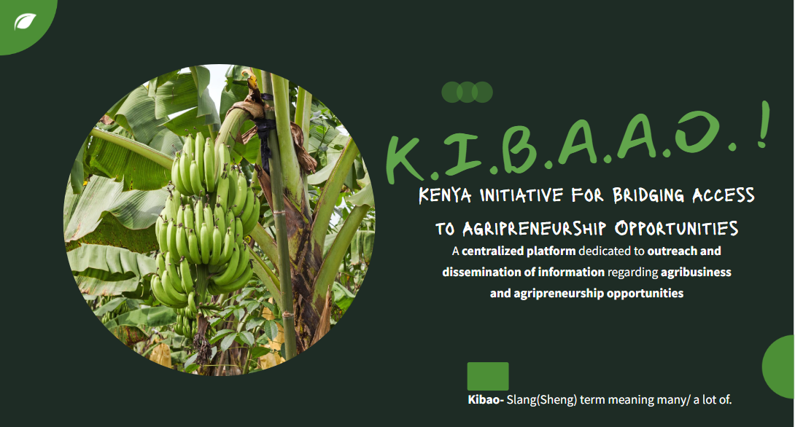
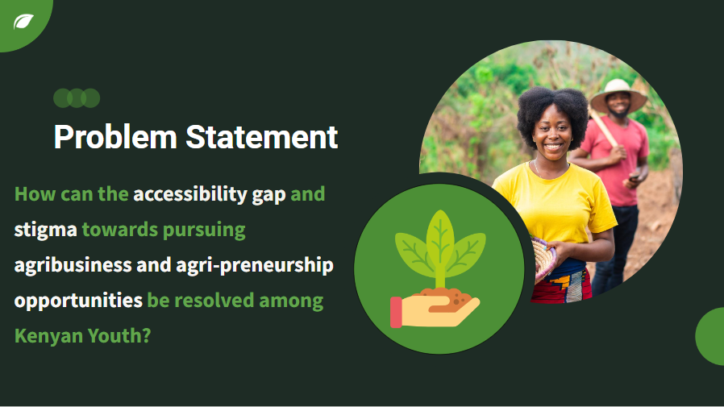
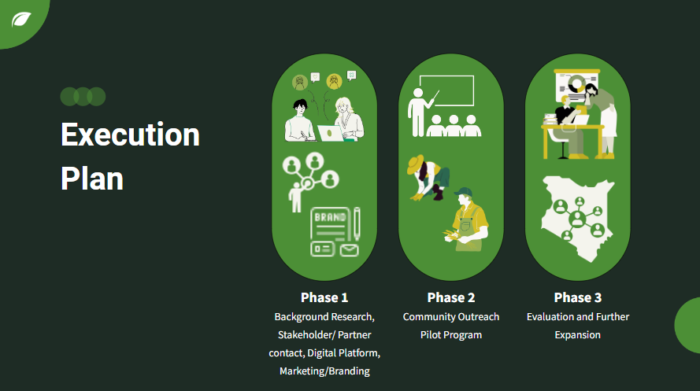
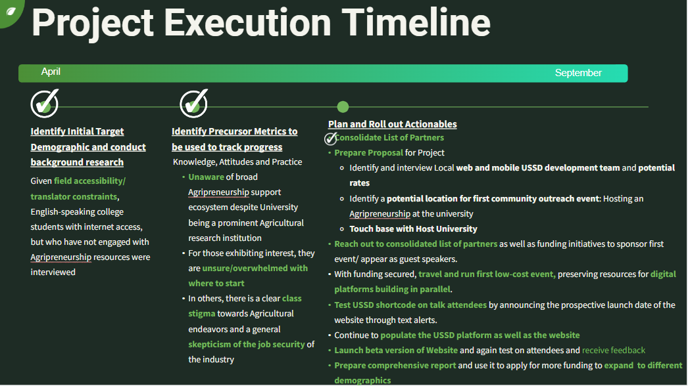
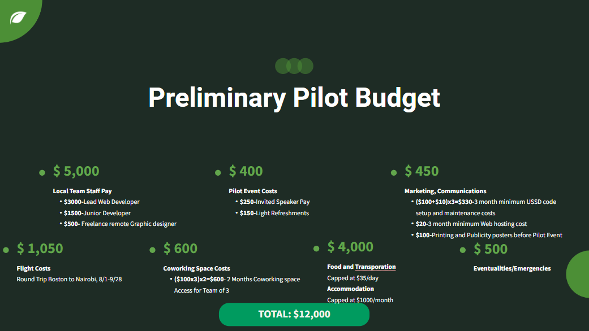

Bridging Access to Agri-preneurship for Kenyan Youth
In this class offered by MIT D-Lab, and instructed by Innovators in Health co-founder, Manish Bhardwaj, the goal was to provide the student cohort with the tools necessary to run social enterprises. It centered on running just organizations, from recruiting, establishing culture and values, developing leadership styles, and building participatory structures. It also emphasized developing critical and moral consciousness through first understanding the roots, forms, evolution and persistence of injustice.
Ultimately, we as class participants would pick a societal challenge, survey and critique past efforts, and propose a design of our own, developing a report and presentation which would be suitable for recruiting teams and fundraising.
My project centered around developing a centralized platform dedicated to the outreach and dissemination of information regarding agribusiness and agripreneurship opportunities to youth in Kenya, having noted the low engagement from this large demographic in one of the cornerstones of Kenya's economic sector.
Key Skills : Finding vision and voice, systems and stakeholder analysis, designing interventions and pilots, business models,paths to scale, strategic "big picture" thinking
Problem Framing
Unemployment rates for youth in Kenya have seen a steep and steady increase since 2016(World Bank, Youth Unemployment Rate for Kenya [SLUEM1524ZSKEN])>. Although
agricultural products are central to the economy, youth involvement in the sector is lacking. There is a need for the transfer of valuable skills and knowledge
in agricultural production and business from the current, aging, farmer demographic which is reported to have an average age of 61( Farm Africa, “Seven reasons why we support young farmers in Kenya” 2017).
Conversely, youth are
needed to invigorate the agricultural sector with innovative projects and ideas that will boost its
productivity and provide a viable path to poverty eradication and economic growth. As it stands, there is
a heavy focus on the academic, white collar job path to financial freedom.
Several initiatives exist to
combat this dynamic and empower youth through agribusiness, however there is limited engagement.
There exists a general stigma along gender or class lines that affects how agriculture is perceived, on
top of a skepticism about it’s potential as a sustainable source of income. The initiatives in question
also have limited reach, with many youth missing out unless hey are plugged into the agribusiness
ecosystem through their educational background, access to the internet, or a pre-existing interest in the
field.

Proposed Solution
My proposed project is the design and execution of an outreach program with multifaceted modes of implementation, that is, a centralized online platform/directory with contacts and information on agripreneurship opportunities and supporting organizations, incubation hubs/workshops/training sessions to increase reach outside of the digital realm, USSD/SMS-based knowledge disbursal, school visits and radio segments/ advertising campaigns. The structure and content would be informed by:
- background research on Kenya's agricultural landscape and prospects is conducted to build a case for pursuing agribusiness.
- surveys gauging interest in and existing knowledge of the field of agribusiness, barriers or stigma/biases towards the field, knowledge of the existing opportunities and the reasons for any gap in this knowledge(eg language barrier, lack of internet access)
- surveys conducted within schools, families, and other formative environments for youth to gauge the presence or priority level of agricultural pursuits/education
- consulting local agriculture-focused learning institutions, education initiatives, and funding initiatives will also be consulted to help build a model for the outreach initiative, that is tailored to the needs of the youth.
In my project report presentation I outlined a three phase execution plan and timeline, with a preliminary pilot budget, and proposed avenues for evaluation and expansion of the initiative.


